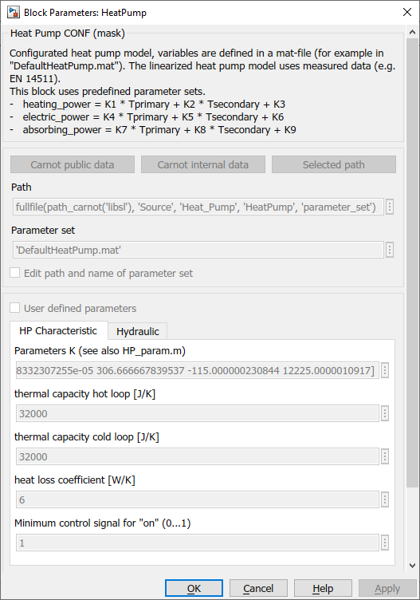
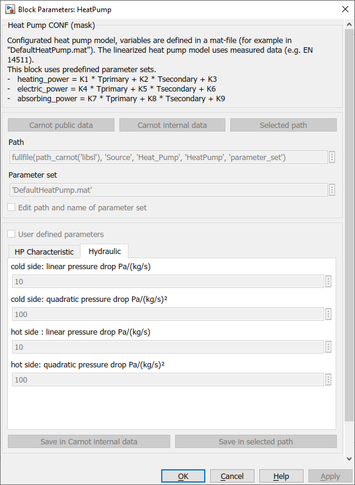

HeatPump
Path: CARNOT/Source/Heat_Pump
Purpose:
Model for the calculation of heat pumps.
Description:
The dynamic behaviour of the heat pump is calculated using an empirical model.
The model is described in HeatPump_basic
(more details see
Hafner 2017 and Schwamberger 1991).
Consider that the model does not take into account any limitations of the
refrigerant or the controller (e.g. minimum evaporation temperature, maximum
condensing temperature, delays during start up). The linear characteristic is
extrapolated beyond the fitting data.
See hp_param for the calculation
of the K1...K9 parameters.
Input:
| THBsource | : | Thermo Hydraulic Bus of the source (cold side) |
| THBin | : | Thermo Hydraulic Bus of the return line (hot side) |
| Tamb | : | ambient temperature of the heat pump (for thermal losses) in °C |
| Ctrl | : | control signal of the compressor speed in [0..1] |
Output:
| THB_source | : | Thermo Hydraulic Bus of the source outlet |
| THBout | : | Thermo Hydraulic Bus of the flow line (hot side) |
| HPdat | : | heat pump data bus, see HeatPump_basic |
| Sensors | : | data bus with the sensor values: primary and secondary inlet and outlet temperatures, control and defrost signals |
Parameters and Dialog Box:


You may directly choose predefined parameter sets. For details see chapter 2.2.1 Choosing parameter sets for configurated models
Validation:
Faure 2010
Middelbeck 2003
Examples:
Open the example explorer from the Matlab command window
ExampleBrowser
or load the examples via the CARNOT library.
Literature:
Schwamberger, K. (1991): Modellbildung und Regelung von Gebäudeheizungsanlagen
mit Wärmepumpen, Fortschrittsberichte VDI Reihe 6, Nr. 263, VDI Verlag Düsseldorf
Allen, J.J., Hamilton J.F. (1983): Steady-state reciprocating water chiller
models; ASHRAE Transactions 89(2A): pp. 398-407
Hafner (2017):
Modellierung Luft-Wasser-Wärmepumpen, CARNOT_Nutzertreffen
NOTE:
The mass flows must be given by external pumps.
Characteristics:
| Direct Feedthrough | : | Yes |
| Sample Time | : | Inherited from driving block |
| Vectorized | : | No |